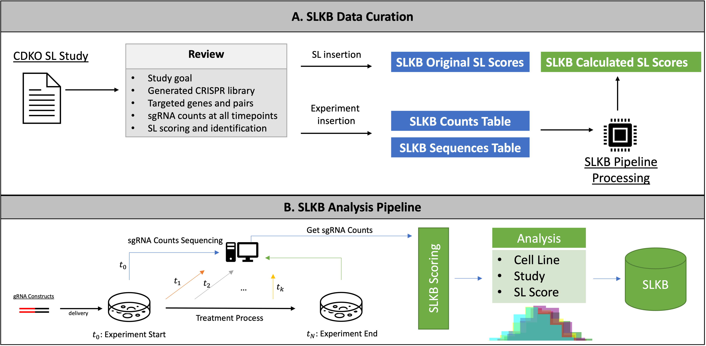
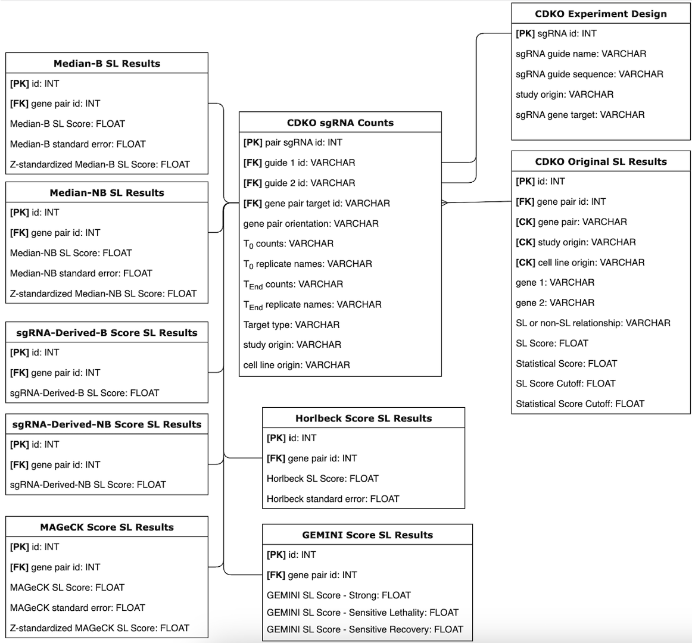

SLKB Pipeline
SLKB: Synthetic lethality knowledge base for gene combination double knockout experiments

Synthetic lethality knowledge base (SLKB) is dedicated to curating CRISPR dual knockdown/out experiments (CDKO) aimed to identify synthetic lethal (SL) interactions between two genes. SLKB pipeline supports the following functions:
1) Storing user CDKO experiments under a generalized experimental design
2) Implementing and evaluating different SL scoring methods
3) Enabling data visualization and browsing
4) Support for SL target identification
Following SLKB pipeline, yielding results can be loaded within SLKB web app for full experience.
Using SLKB
Users can get started through the shared jupyter notebook file. Pipeline with it's full details can be browsed within the documentation.
Database Design

Calculated Scores Table

Interactive Website
Located under the pipeline subdirectory.